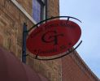
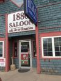
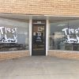
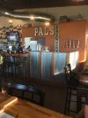
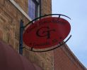
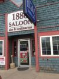
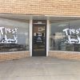
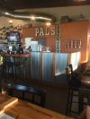

Albums
-
Milk Crate
-
Highway Man
-
A Good Life
-
America, It's You Long To See
-
Happiness For You and I
-
Let Things Go
Videos
Upcoming Events
Scooter's Bar, Sabetha,KS
New Years Eve Party!
December 31, 2021 9pm-1am
The Would Eye, Falls City, NE
January 1, 2022 9pm-1am
Across the Trax, Adams, NE
February 19, 2022 8pm-Midnight
Past Events
The Would Eye, Falls City, NE
November 6, 2021 9pm-1am
The Would Eye, Falls City, NE
September 4, 2021 9pm-1am
The Field Bar, Diller, NE
(feat. Ethan Hough on Lead Guitar)
July 24, 2021 9pm-1am
Good Times Bar & Grill, Louisville, NE
July 17, 2021 8:30pm-12:30pm
Black Cow Fat Pig, Norfolk, NE
July 14, 2021 6pm-9pm
Black Cow Fat Pig, Norfolk, NE
June 23, 2021 6pm-9pm
Pop N’ Docs, Decatur, NE
June 19, 2021 4pm-8pm
Pickrell Days, Pickrell, NE
June 13, 2021 12pm-4pm
Seneca 150 + 1 year Anniversary, Seneca, KS
June 12, 2021 3:30pm-5:30pm
Pop N’ Docs, Decatur, NE
May 31, 2021 3pm-7pm
Tipsy Cow, Franklin, NE
May 29, 2021 8pm-Midnight
Private Wedding Party,
Pitch West, Omaha, NE
May 21, 2021 7pm-11pm
Private Birthday Party, Lincoln, NE
May 8, 2021 5pm-???
Broadway Brothers, Decatur, NE
April 3, 2021 8pm-Midnight
Braska Bar, Lincoln, NE
March 17, 2021 5pm-8pm
The Would Eye, Falls City, NE
March 6, 2021 9pm-1am
Black Cow Fat Pig, Norfolk, NE
February 19, 2021 6pm-9pm
Cedarwood Assisted Living,
Fairbury, NE
January 19, 2021 2pm-3pm
Tooley’s Lounge, Fairbury, NE
January 1, 2021 12pm-4pm
Rusty’s Place, Humboldt, NE
December 31, 2020 9pm-1am
Good Times Bar & Grill, Louisville, NE
November 25, 2020 8pm-Midnight
Rusty’s Place, Humboldt, NE
October 31, 2020 9pm-1am
Falls City Chamber Event, Falls City, NE
September 27, 2020 12pm-4pm
Private Birthday, Portis, KS
September 26, 2020 8pm-Midnight
Black Cow Fat Pig, Norfolk, NE
September 25, 2020 6pm-9pm
Private Wedding Reception, McCook, NE
September 20, 2020 4pm-7pm
Schilling Bridge Winery, Pawnee City, NE
September 6, 2020 2pm-5pm
The Would Eye, Falls City, NE
September 5, 2020 9pm-1am
Black Cow Fat Pig, Norfolk, NE
September 4, 2020 6pm-9pm
Hub Cafe Micro Market, Lincoln, NE
August 19, 2020 5pm-7pm
Bohemian Lounge, Verdigre, NE
August 15, 2020 8pm-Midnight
About Sawyer Jay
What Sawyer Jay Performs
Sawyer Jay is an energetic and entertaining artist. He is able to captivate audiences with his unique tenor voice and his ability to play multiple instruments simultaneously, such as; the guitar, banjo, harmonica and drums. As a result of his multi-instrumental performances his fans throughout the midwest nicknamed him “The One Man Van Band.”
The music he performs is as multifaceted as the instruments he plays. His repertoire includes a variety of classics, including artists such as Johnny Cash, Jim Croce, Simon & Garfunkel, The Beatles, Tom Petty and John Denver. He also performs a collection of newer songs including artists like The Zac Brown Band, Chris Stapleton, Tyler Childers, The Avett Brothers and many more. As well as playing an array of covers, Sawyer Jay is a talented songwriter and enjoys showcasing his own compositions during his shows.
An engaging and exciting performer, Sawyer Jay is sure to attract and entertain audiences of all ages.
How Sawyer Became A Musician
Sawyer Jay began learning and playing music at an early age. He took piano lessons, played the saxophone in the school band and sang in the school choir. All of this musical knowledge aided him when he began to teach himself guitar, and later the banjo and harmonica, during his high school years.
After graduating high school, Sawyer Jay’s love of music led him to Nashville, Tennessee. While living in Nashville, he navigated through the cut throat music scene of the music city. The obstacles of big record companies and booking agencies didn’t stop him. He played at the famous Bluebird Cafe, The Five Spot, The Underground and, like many up and coming musicians, busked for tips on Broadway Street. While in Nashville he was fortunate enough to share the stage with many musicians including, Tim Boucher and Samantha Mouchet.
After a year of living in the music city, Sawyer Jay returned to his home in Lincoln, Nebraska, where he continued to perform and play music. He played solo shows as well as playing in multiple bands at local venues such as; The Zoo Bar, Knickerbockers, Duffy’s Tavern and others.
Following every show Sawyer Jay has played, his fan base has continued to grow. As a result, he has been invited to perform at the Nebraska State Fair and multiple county fairs throughout the midwest.
Currently, Sawyer Jay resides in Lincoln, Nebraska. He plays shows at a variety of venues including; bars, wineries, weddings, private parties and any occasions that need music.
More About Sawyer Jay
“The One Man Van Band” plays more than 50 shows across the midwest every year.
Sawyer Jay attended the University of Nebraska-Lincoln and graduated with a Bachelors degree in English in 2018. He was awarded for his composition “Running Behind” in the Omaha Once Songwriting Competition in 2015, the critics stated that it was “a song that rises above the others” and that the “lyrics are universal, and very relatable.”
“Songs evoke a general sense of growing up in Nebraska. The primarily mid-tempo pieces capture the essence of life on the plains quite effectively…Its texture gave the listener the feeling of riding in the back of a pickup on a warm day.” - Hear Nebraska
Book Sawyer Jay Today
SAWYER JAY KREIKEMEIER
Email: sawyerjkreikemeier@gmail.com
Phone: (402) 890 – 1111
BLACK DOG BOOKING COMPANY
Shawn Cole
Email: mrshawncole@gmail.com
Web: shawncole.net